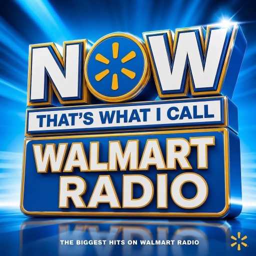

(Almost) every song played on the in-store Walmart Radio stream, logged minute-by-minute since May 2024 — the logger has dropped out a handful of times, and those gaps are marked in the charts. Not affiliated with Walmart — just a log of what the speakers are up to.
Loading…
The last 100 songs, newest first, with how often the station has come back to each one lately. Click any cover for the full song page.
Most-played songs and artists. The range chips scope both lists.
Full history. Shaded bands mark gaps where the logger was down — silence in the data, not in the stores.
Pick the hours you're in the store — working or wandering — and see what the radio played at you. Times are your local time. Overnight shifts work too: pick something like 10:00p to 6:30a, and choose the days your shift starts.
The extremes a two-year log turns up. Every one of these is recomputed from scratch on each refresh, so they do change.
Nobody publishes what's in rotation, so this works it out from the log alone — no show names, no schedule, just the clock and plays.
Pick a date to replay it, first song to last. Your local time. Repeats and unusually quick returns are flagged as you scroll.
All of it. Search, filter by rotation status, sort by any column — enough to answer questions the charts don't.
The whole log is downloadable. It is the same file the charts on this page are built from — no sampling, no aggregation.
| played_at_utc | Timestamp the track change was observed, UTC,
second precision. ISO 8601 with an explicit Z in the CSV
(2026-08-13T12:34:56Z); a UTC-aware timestamp in the
Parquet. |
|---|---|
| artist | Artist string exactly as the stream reported it. Not normalised or deduplicated against MusicBrainz. |
| song | Title as reported, including any “(Feat. …)” or remix credit. |
One row per play. Song identity is the
(artist, song) pair. Licensed as a plain factual record —
use it for whatever you like; a link back is appreciated.
What the file does and doesn't contain, so you can judge it before you build on it.